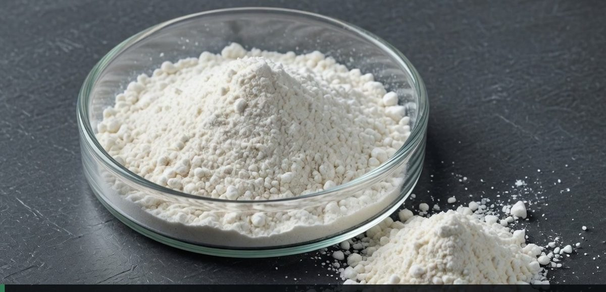
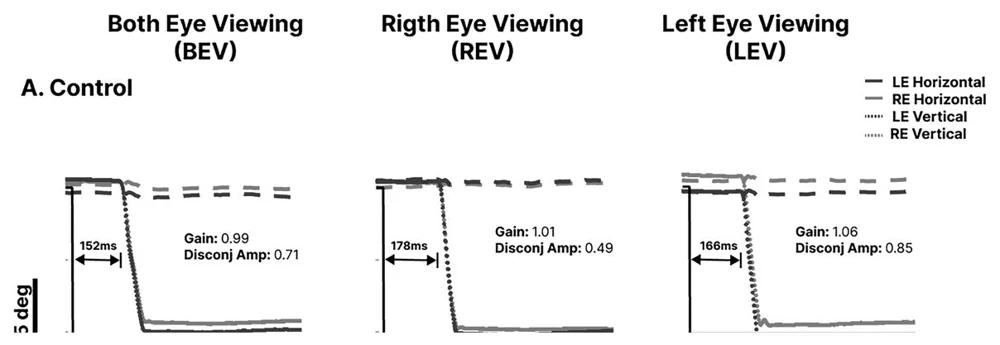
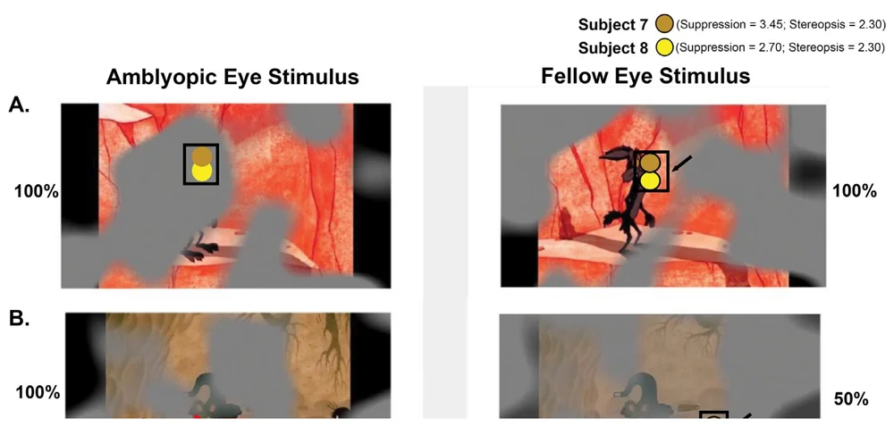
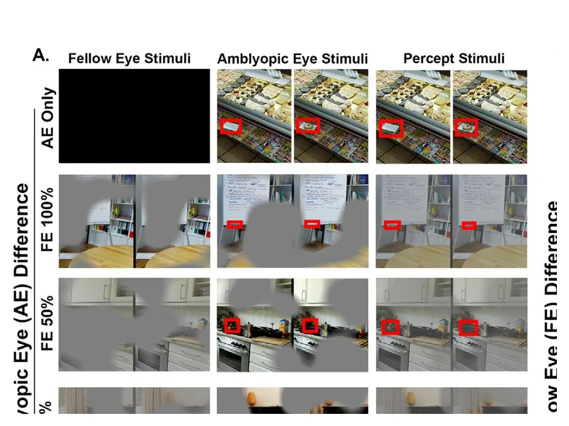
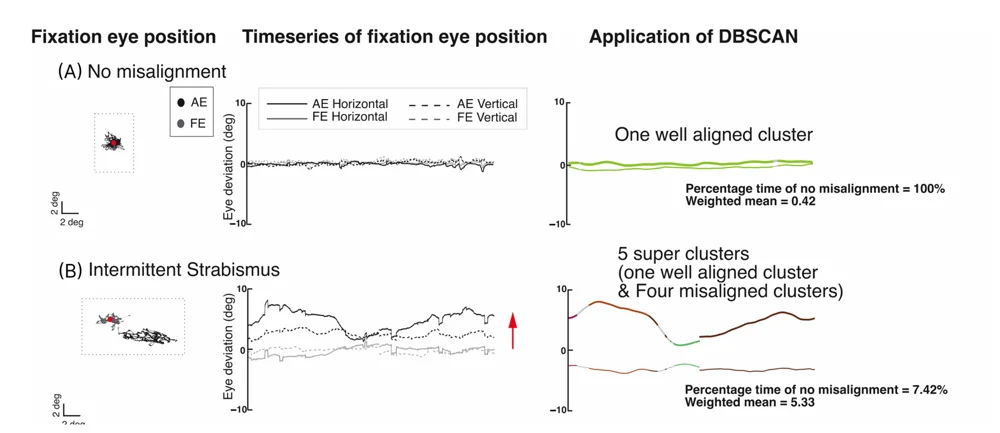
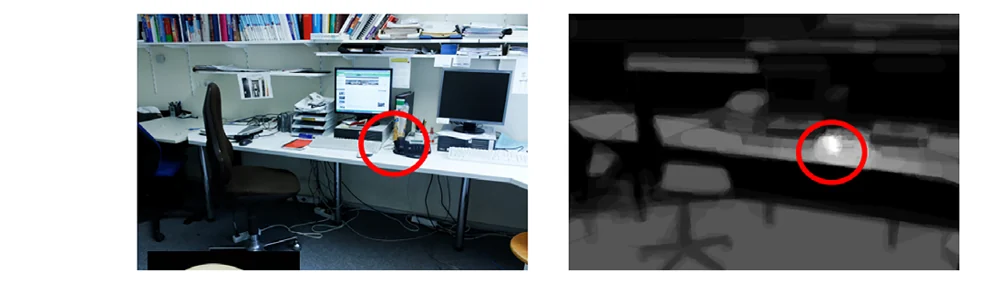
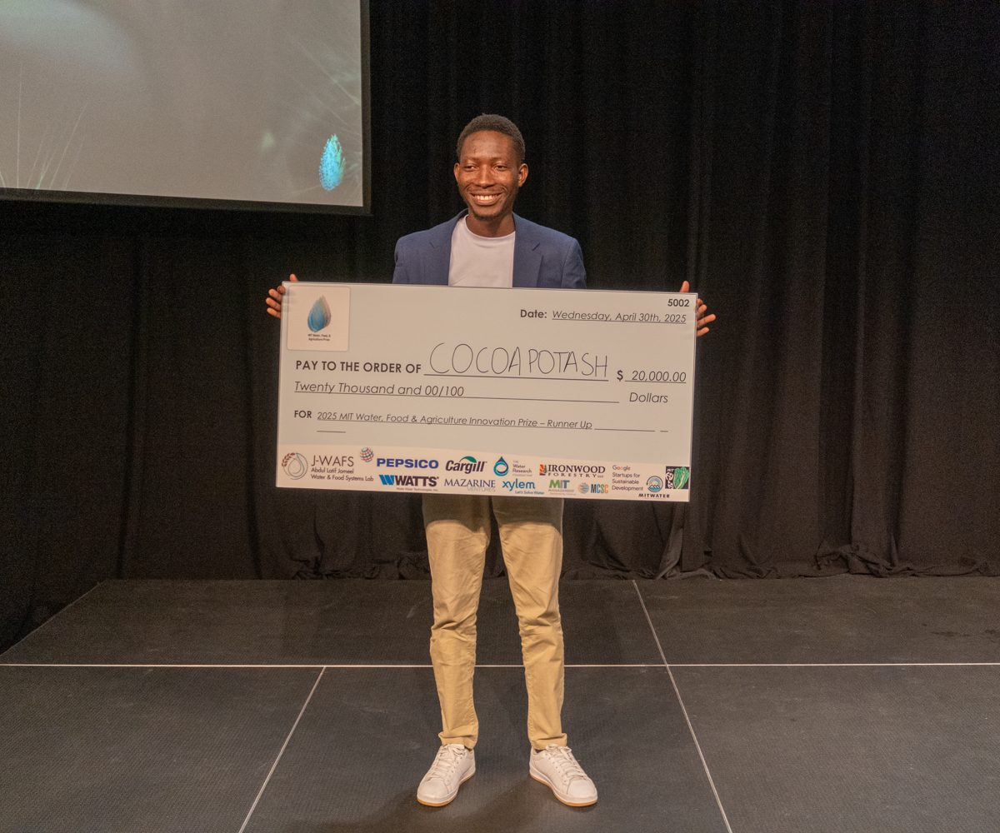
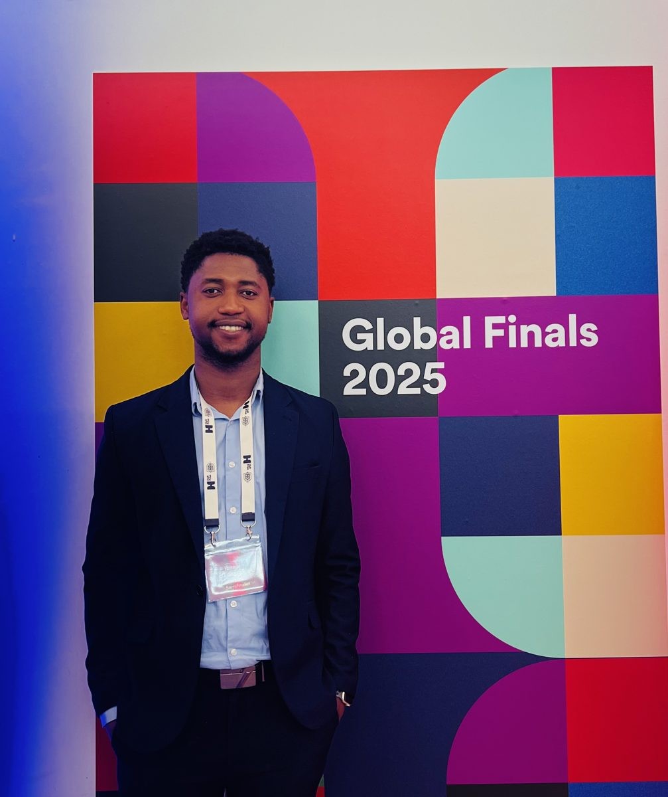
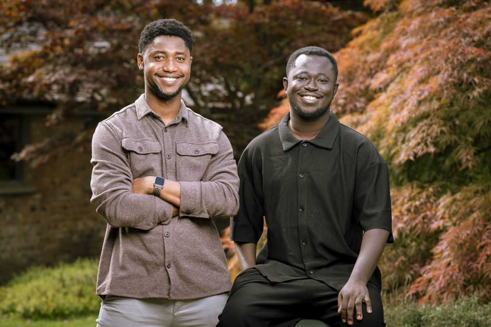

Ibrahim
Mallam
Quagraine
Co-founder of Cocoa Potash. Biomedical engineer finishing a PhD at Case Western.
Open to fellowships and collaborations
01 Founder
Cocoa Potash turns farm and forest waste into low-carbon minerals.

My part
- Process and line design; inventor on the provisional patent
- Financial model, grants and early capital
- Supply from Cargill Ghana; 23 farmer cooperatives
- A team of about 20 in Ghana, the U.S. and Canada
- 2022Co-founded with Prince Agyei Baffour
- 2024Pilot production in Ghana
- 2025First revenue
- 2026U.S. company; patent filed
- NextQuébec line, then Tema
02 Researcher
I study eye movements as a window into the brain.
Cole Eye Institute, Cleveland Clinic, and the Louis Stokes Cleveland VA Medical Center. PhD in Biomedical Engineering, Case Western, expected December 2026.
Papers
First authorIOVS, 2026
“Look versus see”: does fellow-eye contrast change what the amblyopic eye perceives?

First authorIOVS, 2026
Visually guided saccades in amblyopia and strabismus

First authorIOVS, 2024
Eye tracking during dichoptic video viewing in amblyopia

Co-first authorIOVS, 2025
Dichoptic visual search and visual function deficits in amblyopia

Co-authorJ. Eye Movement Research, 2026
Fixation and eye alignment in strabismus with and without amblyopia

Co-authorMovement Disorders, 2024
How Parkinson’s disease changes priorities in visual search
Previews are figures from each paper, shown with credit to the journals.
03 Recognition
Four venture wins and two global finals.


4
venture competitions won
- 2026Morgenthaler-Pavey, Venture Track
- 2026Penn State Land Grant Startup Launch
- 2026Global Cleveland NOVA Pitch
- 2023Morgenthaler-Pavey, Social Impact
Also
- CDL-Rockies, AgriFood
- Greentown Labs
- CES 2026
- Rice Business Plan semifinalist
- TiE U Boston runner-up
- Mastercard Foundation FAST Fellow
- Outstanding Researcher, AIPNO
- Tau Beta Pi
- Best Graduating Student, BME, KNUST
- MIT WFA Prize screening committee

04 About
Prince and I grew up in cocoa-farming families. His family lost a 15-acre farm to a fire that started with burning waste. That is the problem we work on.
Breman Asikuma → KNUST, Kumasi → ASU, Tempe → Case Western, Cleveland → Québec